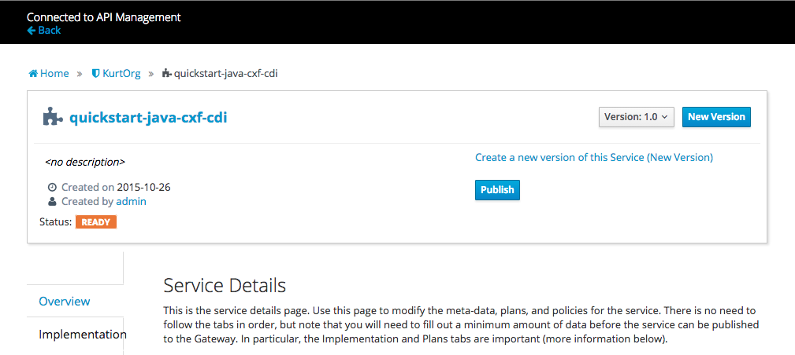

Importing a service from Fabric8 and publishing it to the gateway
Let's assume you have deployed the CxfCdi quickstart in Fabric8 using
...
mvn -Pf8-deploy-local
...
from the ipaas-quickstarts/quickstart/cdi/cxf directory and that you created your own organization in apiman. You can now navigate to the Organization/Service page to 'Import Services' into apiman. Apiman will obtain a list of running services in your namespace that match your search string. Use '*' to match all service.
 .
.
Go through the wizzard and select import as 'Public Service' as we don't yet have any Plans or Policies set up. Note that we can add those later if needed. Please notice that after the import is complete, the service has discovered the serviceUrl, serviceType, descriptionUrl and descriptionType. When the service was deployed to Kubernetes the service developer registered this information in Kubernetes using Kubernetes Service Annotations.
Kubernetes Service Annotations
Kubernetes allows the creation of Service Annotations. Here we propose the use of the following annotations
'api.service.kubernetes.io/path' - the path part of the service endpoint url. An example value could be 'cxfcdi',
'api.service.kubernetes.io/protocol' - the protocol of the service. Example values can be 'SOAP' or 'REST',
'api.service.kubernetes.io/scheme' - the scheme of service endpoint url which can be 'http' or 'https' (defaults to 'http')
'api.service.kubernetes.io/description-path' - the path part of the service description document’s endpoint. It is a pretty safe assumption that the service self documents. An example value for a swagger 2.0 document can be 'cxfcdi/swagger.json',
'api.service.kubernetes.io/description-language' - the type of Description Language used. Example values supported by apiman are 'WSDL', 'WADL', 'SwaggerJSON', 'SwaggerYAML'.
The fragment below is taken from the service section of the kubernetes.json were these annotations are used
...
"objects" : [ {
"apiVersion" : "v1",
"kind" : "Service",
"metadata" : {
"annotations" : {
"api.service.kubernetes.io/path" : "cxfcdi",
"api.service.kubernetes.io/protocol" : "REST",
"api.service.kubernetes.io/description-path" : "cxfcdi/swagger.json",
"api.service.kubernetes.io/description-language" : "SwaggerJSON"
"api.service.openshift.io/api-manager" : "apiman"
},
...
The fabric8-maven-plugin makes it easy to define these annotations as properties in your project's pom. Simply add a property that is prefixed with 'fabric8.annotations.service.'. In the CdiCxf project mentioned above this looks like
...
<fabric8.annotations.service.api.service.kubernetes.io.path>cxfcdi</fabric8.annotations.service.api.service.kubernetes.io.path>
<fabric8.annotations.service.api.service.kubernetes.io.protocol>REST</fabric8.annotations.service.api.service.kubernetes.io.protocol>
<fabric8.annotations.service.api.service.kubernetes.io.description-path>cxfcdi/swagger.json</fabric8.annotations.service.api.service.kubernetes.io.description-path>
<fabric8.annotations.service.api.service.kubernetes.io.description-language>SwaggerJSON</fabric8.annotations.service.api.service.kubernetes.io.description-language>
<fabric8.annotations.service.api.service.openshift.io.api-manager>apiman</fabric8.annotations.service.api.service.openshift.io.api-manager>
...
By convention the part after the prefix is the annotation key, and if the key contains a '.', everything before that last dot turns into the annotation's namespace. So, for example, 'api.service.kubernetes.io.path' turns into 'api.service.kubernetes.io/path in the kubernetes.json.
Publishing the service to the gateway
You may have noticed the use of the annotion "api.service.openshift.io/api-manager" : "apiman". If this annotation is set it this service will be imported automatically. After the service is imported into the API manager, we can publish it out to the gateway. After publication the service will be ready for use by service consumers. To publish a service, open the service detail page and click the blue 'publish' button.
.
The service data is send to the gateway and now the gateway is able to route traffic from the gateway to the internal service. The internal service address is displayed in the 'Implementation' tab on the service detail page (http://quickstart-java-cxf-cdi.vagrant.f8/cxfcdi), and the exact gateway address is displayed in the 'Endpoint' tab (http://apiman-gateway.vagrant.f8/gateway/Fabric8Org/quickstart-java-cxf-cdi/1.0). The latter is the 'managed endpoint' a service consumer would be using.
Applying a Policy to a 'Public Service'
A service can be published to the gateway without any policies but it makes sense to configure at least an authentication policy. Since we already published the service we can no longer change the settings on this version. So let's add version 1.1 of this service (clone version 1.0). Now you can navigate to the Policy screen on the Service and select Add Policy. In the dropdown select a Basic Authentication policy, and select 'Basic Auth Required' and add a Static Identity and a user/password pair.
 .
.
Click save when done, and now you should see the policy on the 'Policy' tab, so go ahead and 'Publish' the service. The managed endpoint of this new version of the service is http://apiman-gateway.vagrant.f8/gateway/Fabric8Org/quickstart-java-cxf-cdi/1.1. You can try it in a new browser window and you should see it pop up the basic auth login box.